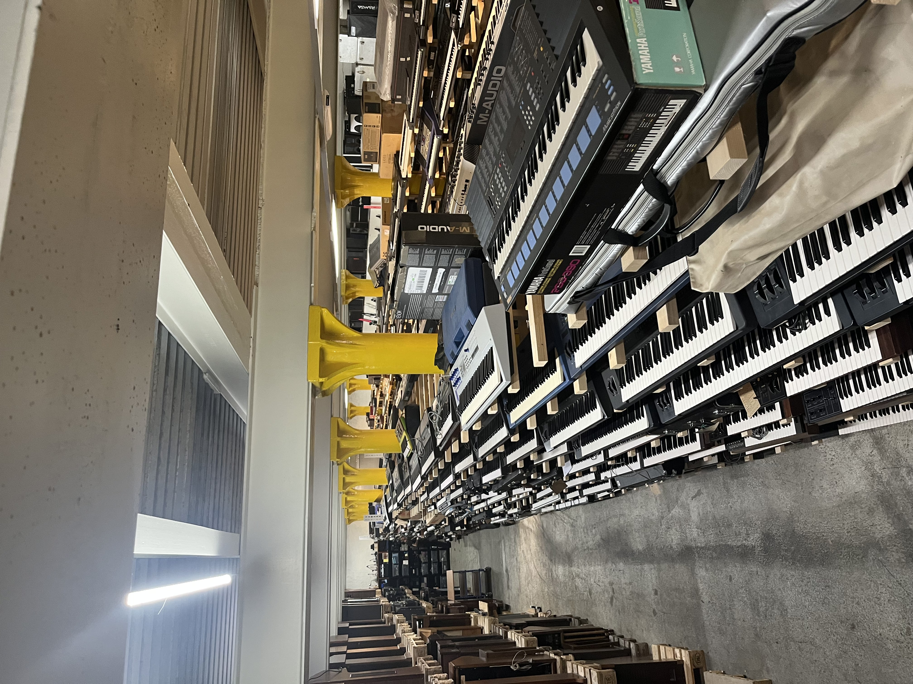
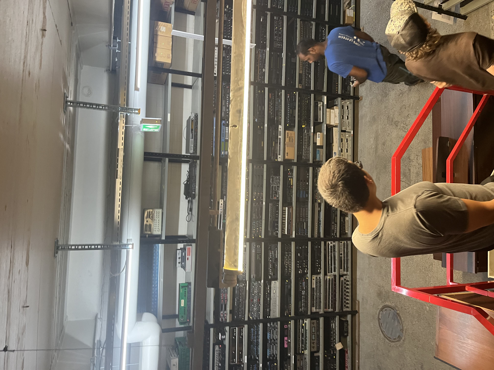
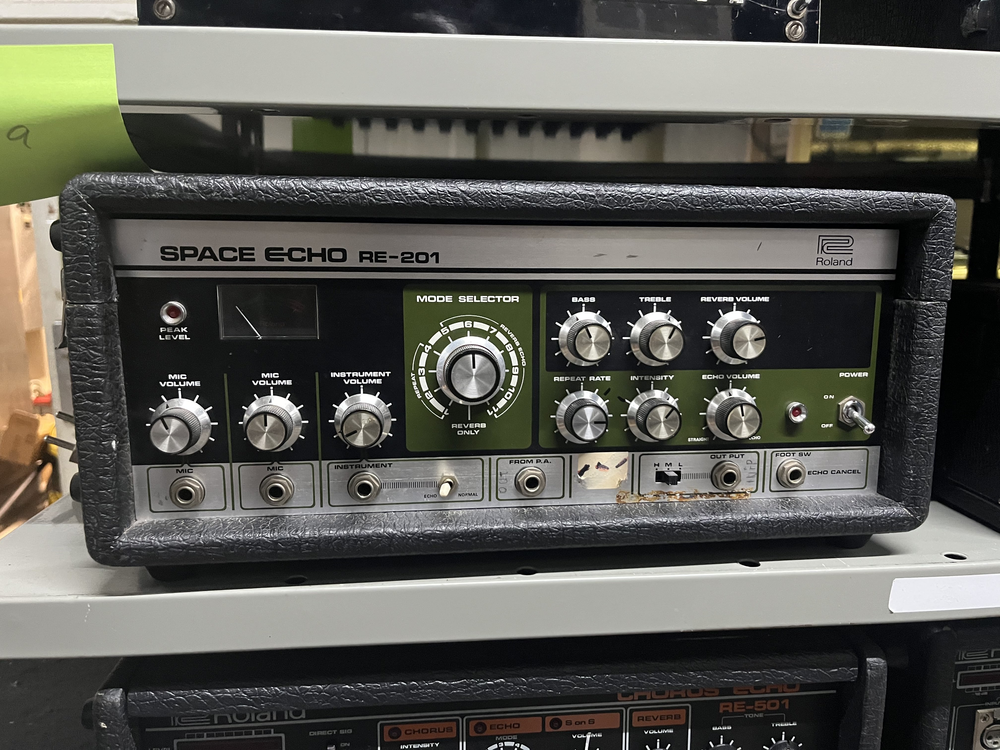
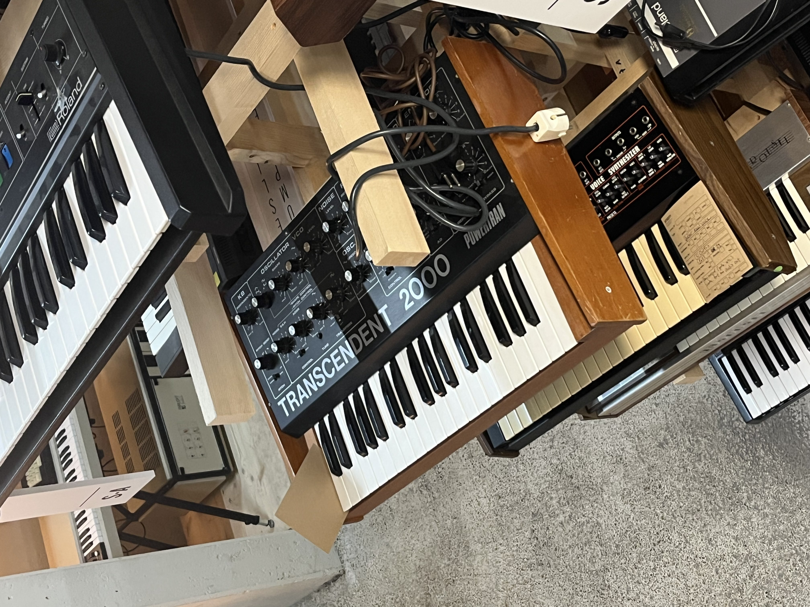
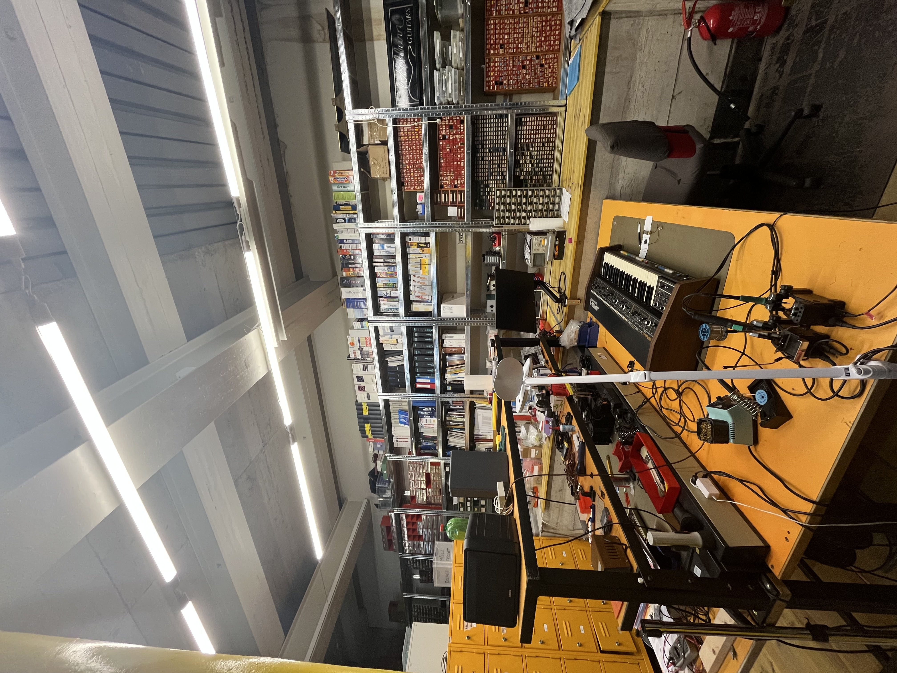
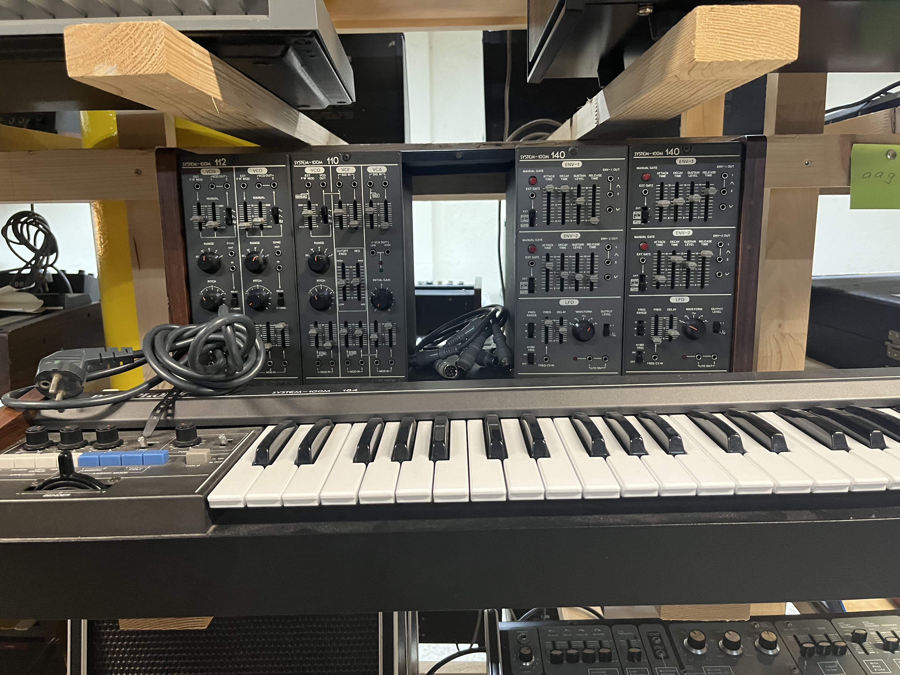
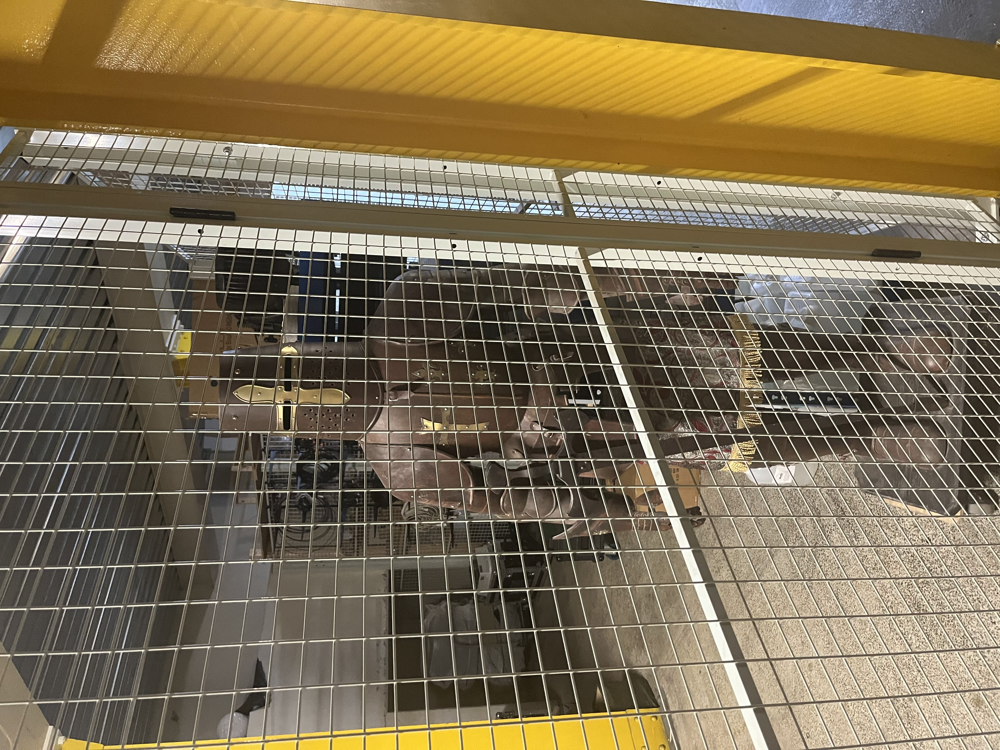
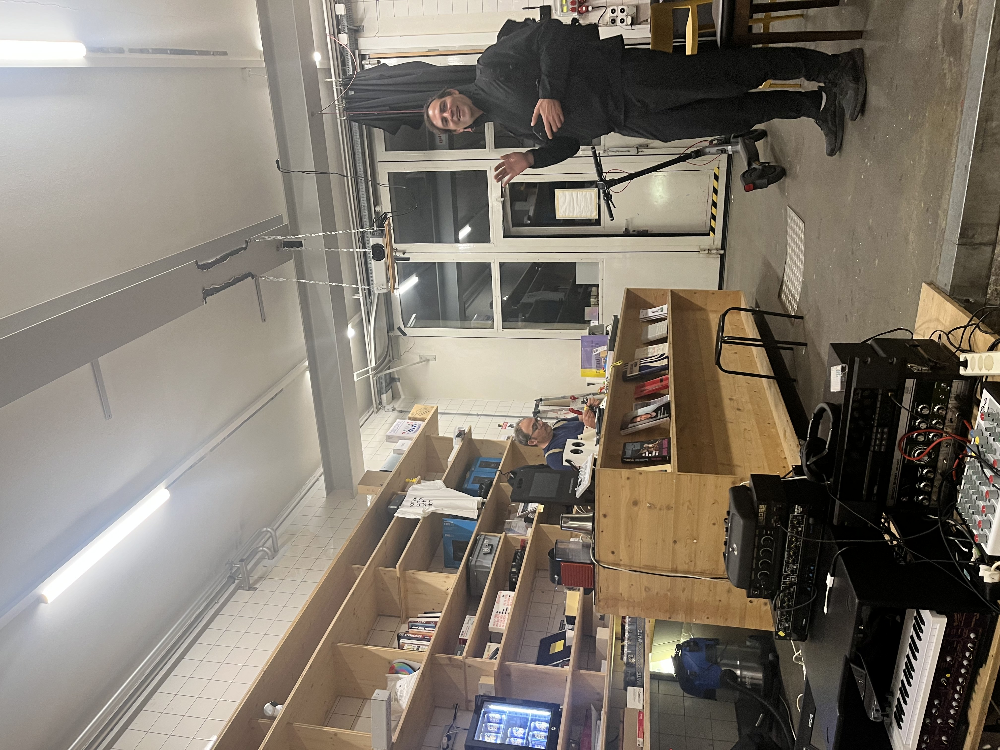
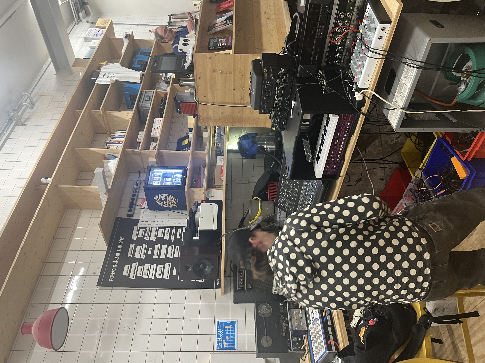
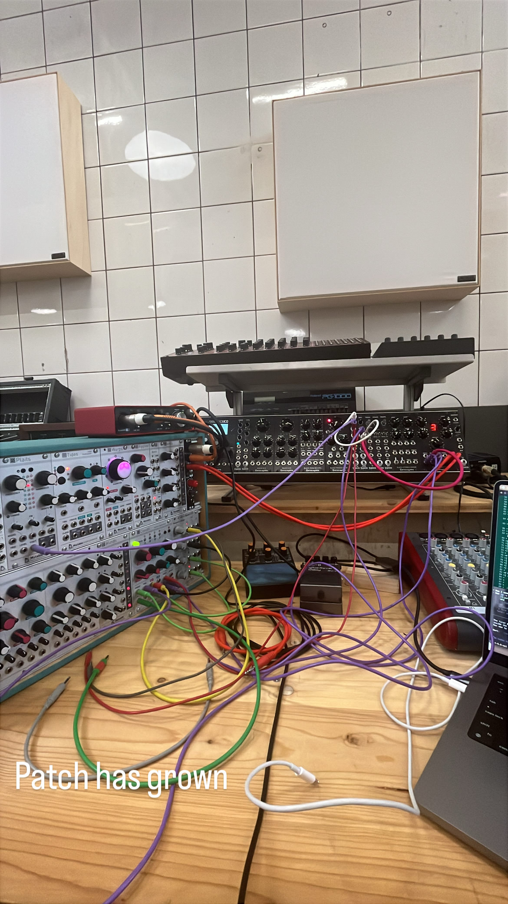

Residency / 2026
SMEM
Context
A collaborative residency inside a living archive of electronic instruments.
In 2026, Kimina and Goffbaby came together for a three-week residency at SMEM—the Swiss Museum and Centre for Electronic Music Instruments in Fribourg. The residency was developed as part of a Pro Helvetia Synergies collaboration.
SMEM’s collection and Playroom created the setting for an extended collaborative process around electronic sound and music-making. The residency concludes with a public recap of the process and a live set on 5 September 2026.
Gallery
Inside SMEM










Details
- Artists
- Kimina · Goffbaby
- Host
- SMEM
- Programme
- Pro Helvetia Synergies
- Closing event
- 5 September 2026